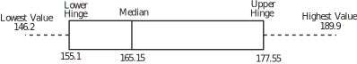

2 Outliers
Outliers are values which are well outside the range covered by the vast bulk of a data set - a precise definition is impossible although some simple criteria do exist which may be used to detect outliers and accept or reject outliers. The seven values shown as large dots above illustrate the concept of outliers. Outliers can be extremely important since they may be (for example) erroneous data or they may point the way to further investigations of a data set.
For example, one statistic used to measure the state of the industrial development of a nation is the number of miles of railway track built per square mile of land. The box-and-whisker plot below summarises this variable for a total of 26 nations in the year 1972 according to one author.
Figure 12
The figure for Cuba literally means that the whole island is covered by tracks which are placed about 3m apart! Clearly, there is an error in the data. In fact the 1972 Statistical Abstract of Latin America gives the figure for Cuba as 71.75 miles of railway per square mile of land. Note that the figure is still an outlier but is much more believable.
Task!
Place the items in the data set below in rank order and use your rank ordering to find the five number summary of the data.
| 155.3 | 177.3 | 146.2 | 163.1 | 161.8 | 146.3 | 167.9 | 165.4 | 172.3 | 188.2 |
| 178.8 | 151.1 | 189.4 | 164.9 | 174.8 | 160.2 | 187.1 | 163.2 | 147.1 | 182.2 |
| 178.2 | 172.8 | 164.4 | 177.8 | 154.6 | 154.9 | 176.3 | 148.5 | 161.8 | 178.4 |
Construct a box-and-whisker diagram representing the data.
Does the box-and-whisker diagram tell you that the data set that you are working with is symmetrical? Record the reasons for your comments.
Data
| 146.2 | Lowest Value = 146.2 | |
| 146.3 | ||
| 147.1 | ||
| 148.5 | ||
| 151.1 | ||
| 154.6 | Lower Hinge = 155.1 | |
| 154.9 | Low-Spread = 132.2 | |
| 155.3 | ||
| 160.2 | ||
| 161.8 | ||
| 161.8 | ||
| 163.1 | ||
| 163.2 | ||
| 164.4 | ||
| 164.9 | Median = 165.15 | Mid-Spread = 22.90 |
| 165.4 | ||
| 167.9 | ||
| 172.3 | ||
| 172.8 | ||
| 174.8 | ||
| 176.3 | ||
| 177.3 | ||
| 177.8 | Upper Hinge = 177.55 | |
| 178.2 | High-Spread = 200.9 | |
| 178.4 | ||
| 178.8 | ||
| 182.2 | ||
| 187.1 | ||
| 188.2 | ||
| 189.4 | Highest Value = 189.4 |
The Box-and-Whisker plot is:

The plot indicates that the distribution is not symmetrical, for example you would expect the median value to appear midway between the hinges for a symmetrical distribution.
2.1 Criteria for rejecting outliers
As you already know, outliers may be taken to be observations which lie well outside the range of most of a sample. They are important for several reasons:
- they can have misleading effect on statistics such as the mean and standard deviation;
- their occurrence may be due to incorrect observation, measurement or recording. In this case it is often possible to correct the data;
- their presence can induce a false skewness in a data set;
- they may actually be members of a population not under consideration. For example, a study of urban families may involve recording the number of children in a family, say between 0 and 4 for the sake of discussion. An outlier might be caused by a rural family with, say, 10 children, living in temporary urban accommodation. This family is part of a different population.
Simple criteria exist which facilitate the detection of outliers. These criteria should be used with some caution and never automatically used simply to reject an outlier. You should always ask why such a value occurred in the first place and work to answer such a question sensibly before considering rejection. Two criteria for the detection of outliers are given below. Criterion 1 may be applied to data sets that are known to be normal in shape. Criterion 2 uses the five-number summary discussed above and may be applied to any data sets.
Criterion 1
Knowing that some 99.7% of a normal population lies within 3 standard deviations of the mean, we could treat any value further than say 3.3 standard deviations from the mean as on outlier. This choice essentially implies that a value has less than 1 in a 1000 of chance of occurring naturally outside the range defined by 3.3 standard deviations from the mean. Using standardized scores with as the potential outlier we can state the criterion
Note that and are sample estimates of the mean and standard deviation of the population.
Criterion 2
Using a five-number summary of a data set one can easily set up a criterion which may be used to classify outliers as either ‘moderate’ or ‘extreme’.
The following diagram illustrates the situation where IQR is the Inter-Quartile Range.
Figure 13
While all values classified as outliers should be investigated, this is particularly true of those classified as extreme outliers.
Task!
Manufacturing processes generally result in a certain amount of wasted material. For reasons of cost, companies need to keep such wastage to a minimum. The following data were gathered over a two week period by a manufacturing company whose production lines run seven days per week. The numbers given represent the percentage wastage of the amount of material used in the manufacturing process.
Daily Losses (%) 6 8 10 12 12 13 14 14 18 18 19 20 22 26
- Find the mean and standard deviation of the percentage losses of material over the two week period.
- Assuming that the losses are roughly normally distributed, apply an appropriate criterion to decide whether any of the losses are smaller or larger than might be expected by chance.
-
We will treat any value further than 3.3 standard deviations from the mean as an outlier (criterion 1). Using standardized scores with
as the potential outlier we need to calculate the quantity
and then accept
as a member of the distribution if
. Otherwise we reject
as an outlier.
Calculation gives:
6.00 -9.14 83.59 1.63 8.00 -7.14 51.02 1.28 10.00 -5.14 26.45 0.92 12.00 -3.14 9.88 0.56 12.00 -3.14 9.88 0.56 13.00 -2.14 4.59 0.38 14.00 -1.14 1.31 0.20 14.00 -1.14 1.31 0.20 18.00 2.86 8.16 0.51 18.00 2.86 8.16 0.51 19.00 3.86 14.88 0.69 20.00 4.86 23.59 0.87 22.00 6.86 47.02 1.22 26.00 10.86 117.88 1.94 - The calculation shows that all values of and so we conclude that the daily losses are within the range indicated by chance variation.